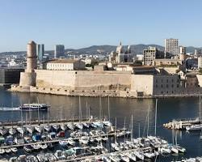
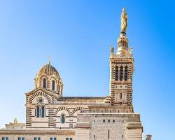
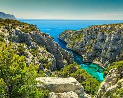

Серце Марселя, де кипить життя. Тут можна скуштувати свіжі морепродукти, помилуватися на старі рибацькі човни і просто насолодитися атмосферою.
Відомий символ Марселя, який височіє над містом. З її вершини відкривається панорамний вид на місто і море.
Дивовижні скелясті бухти, розташовані недалеко від Марселя. Це ідеальне місце для любителів природи і піших прогулянок.
